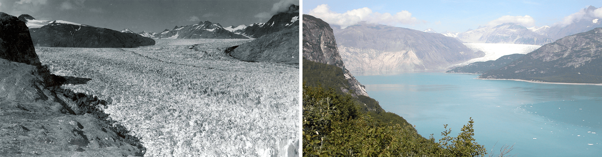

"Climate change describes a change in the average conditions - such as temperature and rainfall - in a region over a long period of time"
But don't confuse this with weather! Weather describes the conditions at a specific time. (Will it rain today in Arizona?) Climate describes the expected conditions in a certain place at a certain time in the year. (Even if it rains a few days, Arizona will still be a desert climate)
What causes this you may ask? The answer lies in what we call greenhouse gases. They are in the Earth's atmosphere and do exactly what their name is called. They act like a greenhouse and keeps the Earth warm by trapping in the heat. Below is a graphic of the greenhouse effect.

credit: NASA/JPL-Caltech
Source NASA

credit: USGS
On the left is the Muir glacier in August 1941 and on the right is in August 2004
As depicted in the images above, due to the Earth heating up, the glacier has melted over the course of 63 years.